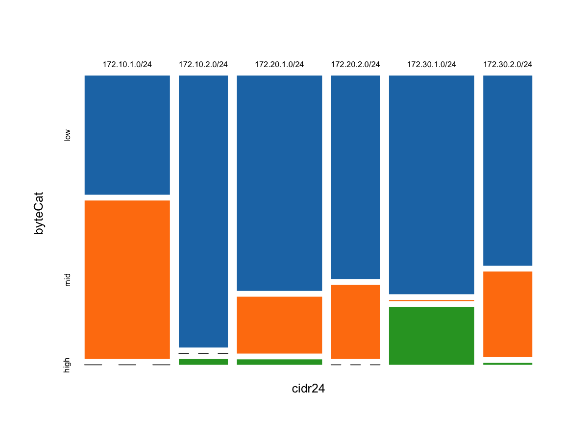

Introduction
The goal of this tutorial is to provide useful examples of how to use datadr and Trelliscope as a supplement to the introductory tutorials provided here and here, which focus more on illustrating functionality than doing something useful with data. It is based around the 2013 VAST Mini-Challenge 3 dataset.
Data sources
The data available for download on the VAST challenge page provides files that contain Network Flow (netflow), Network Health, and Intrusion Protection System data. Documentation that describes these data, as well as a diagram of the network, is available here:
Netflow data provides summaries of connections between computers on a network. For example, if you visit a web page, you initiate a connection between your computer and a web server. The connection is identified by the IP address of your computer and the network port from which it originated, as well as the IP address and network port of the machine it is connecting to. In the course of a connection, packets containing data are sent back and forth. A netflow record provides a summary of the connection, including the source and destination information we just discussed, as well as the total number of packets sent/received, total bytes sent/received, internet protocol used (the two most common are TCP and UDP), etc.
The other types of data are a bit more self-explanatory. The IPS data is simply a log of suspicious network activity. The network health data is a record of statistics of machines polled at some time interval to provide information such as the amount of memory or CPU usage.
We will get more familiar with the data as we begin to explore it, and endeavor to provide descriptions for aspects of the data that may be difficult to understand to someone who has not worked with this type of data before.
Analysis goals
According to the VAST Challenge website:
Your job is to understand events taking place on your networks over a two week period. To support your mission, your choice of visual analytics should support near real-time situation awareness. In other words, as network manager, your goal for your department is to notice network events as quickly as possible.
We are asked to provide a timeline of notable events and to speculate on narratives that describe the events on the network.
Keeping those goals in mind, we will address a more general goal of simply trying to get an understanding of the data through exploratory analysis, making heavy use of visualization throughout, and highlighting the use of datadr and Trelliscope.
"Prerequisites"
It is assumed that the reader is familiar with the R programming language. If not, there are several references, including:
Some familiarity with datadr and Trelliscope is also a plus. It is recommended to spend some time visiting these tutorials:
Everything in this demonstration is done from the R console. Since the data is not very large, we will mainly use R's multicore capabilities for parallel processing and local disk for storage, although a more scalable backend such as Hadoop could be used simply by replacing calls to localDiskConn() with hdfsConn(). Using multicore mode lowers the barrier to entry, since building and configuring a Hadoop cluster is not a casual endeavor.
Environment setup
To follow along in this tutorial, you simply need to have R installed along with the datadr and trelliscope packages. To get these packages, we can install them from github using the devtools package by entering the following commands at the R command prompt:
install.packages("devtools")
library(devtools)
install_github("datadr", "hafen")
install_github("trelliscope", "hafen")
Additionally, we have packaged together some helper functions and data sets particular to this data, which can be installed with:
install_github("vastChallenge", "hafen", subdir = "package")
The following section will cover how to set up the raw data download to get going. You can replicate every step of this tutorial on your own, and are encouraged to do so and to be creative and explore your own analyses. For convenience, all of the code in the tutorial is provided as .R source files here.
File Setup
We will organize all of the data and analysis code into a project directory. For us, this directory is located at ~/Documents/Code/vastChallenge. Choose an appropriate directory for your project and then set that as the working directory in R:
setwd("~/Documents/Code/vastChallenge")
Inside this directory we will create a directory for our raw data.
# create directory for raw text data
dir.create("data/raw", recursive = TRUE)
Now we need the raw data to put in it. The raw data can be obtained by following download link from this page. Here we are only looking at "Week 2" data.
Unzip the files and move the csv files to the directory data/raw.
Aside from the larger csv files, there are other files, including pdf files of data descriptions and a small text file describing the hosts, BigMktNetwork.txt. We have already parsed this file and its contents are available as a data set called hostList in the cyberTools R package installed previously.
At this point, we should have the following files in our project directory:
data/raw/bb-week2.csv
data/raw/IPS-syslog-week2.csv
data/raw/nf-week2.csv
Session Initialization
To initialize an R session for this or any subsequent analyses of this data, we simply launch R and load the required R packages, set the working directory, and initialize a local "cluster":
# use this code to initialize a new R session
library(datadr)
library(trelliscope)
library(cyberTools)
setwd("~/Documents/Code/vastChallenge")
# make a local "cluster" of 8 cores
cl <- makeCluster(8)
clc <- localDiskControl(cluster = cl)
Text Data to R Objects
One of the more tedious parts of data analaysis can be getting the data into the proper format for analysis. datadr aspires to provide as much functionality to make this process as painless as possible, but there will always be special situations that require unique solutions.
For analysis in datadr, we want to take the raw data and store it as native R objects. This provides a great degree of flexibility in what type of data structures we can use, such as non-tabular data or special classes of R objects like time series or spatial objects.
Here, all of our input data is text. Text files are used quite often for storing and sharing big data. For example, often Hive tables are stored as text files. datadr provides some helpful functions that make it easy to deal with reading in text data and storing it as R objects..
In this section we will go through how to read each of the data sources in from text. In each case, we read the data in in chunks. These examples read the data into datadr's "local disk" storage mode using a helper function drRead.csv(). This method also works for reading in text data on HDFS.
NetFlow Data
The NetFlow data is located here: data/raw/nf-week2.csv. To get a feel for what it looks like, we'll read in the first few rows using R's built-in function read.csv().
Looking at a subset
To read in and look at the first 10 rows:
# read in 10 rows of netflow data
nfHead <- read.csv("data/raw/nf-week2.csv", nrows = 10, stringsAsFactors = FALSE)
Here's what the first few rows and some of the columns of this data look like:
nfHead[1:10,3:7]
dateTimeStr ipLayerProtocol ipLayerProtocolCode firstSeenSrcIp firstSeenDestIp
1 2.013e+13 17 UDP 172.20.2.19 239.255.255.250
2 2.013e+13 17 UDP 172.20.2.18 239.255.255.250
3 2.013e+13 17 UDP 172.20.2.17 239.255.255.250
4 2.013e+13 17 UDP 172.20.2.16 239.255.255.250
5 2.013e+13 17 UDP 172.20.2.14 239.255.255.250
6 2.013e+13 17 UDP 172.20.2.13 239.255.255.250
7 2.013e+13 17 UDP 172.20.2.12 239.255.255.250
8 2.013e+13 17 UDP 172.20.2.11 239.255.255.250
9 2.013e+13 17 UDP 172.20.2.10 239.255.255.250
10 2.013e+13 17 UDP 172.20.2.35 239.255.255.250
Let's look at the structure of the object to see all the columns and their data types:
# look at structure of the data
str(nfHead)
'data.frame': 10 obs. of 19 variables:
$ TimeSeconds : num 1.37e+09 1.37e+09 1.37e+09 1.37e+09 1.37e+09 ...
$ parsedDate : chr "2013-04-10 08:32:36" "2013-04-10 08:32:36" "2013-04-10 08:32:36" "2013-04-10 08:32:36" ...
$ dateTimeStr : num 2.01e+13 2.01e+13 2.01e+13 2.01e+13 2.01e+13 ...
$ ipLayerProtocol : int 17 17 17 17 17 17 17 17 17 17
$ ipLayerProtocolCode : chr "UDP" "UDP" "UDP" "UDP" ...
$ firstSeenSrcIp : chr "172.20.2.19" "172.20.2.18" "172.20.2.17" "172.20.2.16" ...
$ firstSeenDestIp : chr "239.255.255.250" "239.255.255.250" "239.255.255.250" "239.255.255.250" ...
$ firstSeenSrcPort : int 29987 29986 29985 29984 29983 29982 29981 29980 29979 29978
$ firstSeenDestPort : int 1900 1900 1900 1900 1900 1900 1900 1900 1900 1900
$ moreFragments : int 0 0 0 0 0 0 0 0 0 0
$ contFragments : int 0 0 0 0 0 0 0 0 0 0
$ durationSeconds : int 0 0 0 0 0 0 0 0 0 0
$ firstSeenSrcPayloadBytes : int 133 133 133 133 133 133 133 133 133 133
$ firstSeenDestPayloadBytes: int 0 0 0 0 0 0 0 0 0 0
$ firstSeenSrcTotalBytes : int 175 175 175 175 175 175 175 175 175 175
$ firstSeenDestTotalBytes : int 0 0 0 0 0 0 0 0 0 0
$ firstSeenSrcPacketCount : int 1 1 1 1 1 1 1 1 1 1
$ firstSeenDestPacketCount : int 0 0 0 0 0 0 0 0 0 0
$ recordForceOut : int 0 0 0 0 0 0 0 0 0 0
This looks like it is almost in a suitable form for analysis. However, there are two columns that correspond to time, and neither is in a handy R-native format. Instead of having a column for TimeSeconds and parsedDate, let's create a new column time that is an R POSIXct object.
# make new date variable
nfHead$date <- as.POSIXct(nfHead$TimeSeconds, origin = "1970-01-01", tz = "UTC")
# remove old time variables
nfHead <- nfHead[,setdiff(names(nfHead), c("TimeSeconds", "parsedDate"))]
Let's now make this operation a function, so that when we read in new rows of the data, we can just pass it through the function to obtain the preferred format:
nfTransform <- function(x) {
x$date <- as.POSIXct(x$TimeSeconds, origin = "1970-01-01", tz = "UTC")
x[,setdiff(names(x), c("TimeSeconds", "parsedDate"))]
}
We will use this function later.
Now that we have figured out what we want to do with the data, we can read the whole thing in. But first we need to talk a little bit about disk connections in datadr.
Local disk connections
We will be storing the data we read in as a datadr local disk connection. A local disk connection is defined by the path where we would like the data to be stored. This should be an empty directory, and can be a nonexistent directory.
Here, we would like to store our parsed netflow data in data/nfRaw. We initialize this connection with a call to localDiskConn():
# initiate a new connection where parsed netflow data will be stored
nfConn <- localDiskConn("data/nfRaw")
This will prompt for whether you want the directory to be created if it does not exist. nfConn is now simply an R object that points to this location on disk:
# look at the connection
nfConn
localDiskConn connection
loc=/Users/hafe647/Documents/Code/vastChallenge/data/nfRaw; nBins=0
We can either add data to this connection using addData() or we can pass it as the output argument to our csv reader, as we will do in the following section.
Reading it all in
It turns out that there is a handy function in datadr that is the analog to read.csv, called drRead.csv, which reads the data in in blocks. It has the same calling interface as R's read.csv with additional arguments to specify where to store the output, how many rows to put in each block, and an optional transformation function to apply to each block prior to storing it.
We will read in the netflow csv file using the default number of rows per block (50000), apply our nfTransform function that adds the time variable, and save the output to our nfConn local disk connection:
# read in netflow data
nfRaw <- drRead.csv("data/raw/nf-week2.csv", output = nfConn, postTransFn = nfTransform)
Be prepared - the ETL operations using local disk are the most time-consuming tasks in this tutorial. On my machine, the above command takes about 10 minutes to execute. We will see that subsequent operations applied to the divided, parsed data are much faster.
Distributed data objects
Let's take a look at nfRaw to see what the object looks like:
nfRaw
Distributed data object of class 'kvLocalDisk' with attributes:
'ddo' attribute | value
----------------+--------------------------------------------------------------------------
keys | [empty] call updateAttributes(dat) to get this value
totStorageSize | 171.98 MB
totObjectSize | [empty] call updateAttributes(dat) to get this value
nDiv | 466
splitSizeDistn | [empty] call updateAttributes(dat) to get this value
example | use kvExample(dat) to get an example subset
bsvInfo | [empty] no BSVs have been specified
'ddf' attribute | value
----------------+--------------------------------------------------------------------------
vars | dateTimeStr(num), ipLayerProtocol(int), and 16 more
transFn | identity (original data is a data frame)
nRow | [empty] call updateAttributes(dat) to get this value
splitRowDistn | [empty] call updateAttributes(dat) to get this value
summary | [empty] call updateAttributes(dat) to get this value
localDiskConn connection
loc=/Users/hafe647/Documents/Code/vastChallenge/data/nfRaw; nBins=0
nfRaw is a distributed data frame (ddf), and we see several aspects about the data printed. For example, we see that there are 466 subsets and that the size of the parsed data in native R format is much smaller (totStorageSize = 171.98 MB) than the input text data. The other attributes will be updated in a moment.
The nfRaw object itself is simply a special R object that contains metadata and pointers to the actual data stored on disk. For more background on ddf and related objects, see here and here, and particularly for ddf objects on local disk, see here.
In any subsequent R session, we can "reload" this data object with the following:
nfRaw <- ddf(localDiskConn("data/nfRaw"))
Earlier we saw in the printout of nfRaw that it has many attibutes that have not yet been determined. We can fix this by calling updateAttributes():
nfRaw <- updateAttributes(nfRaw, control = clc)
Here, through the control parameter, we specified that our local "cluster" we initialized at the beginning of our session should be used for the computation. The update job takes about 30 seconds on my machine with 8 cores.
control argument.Now we can see more meaningful information about our data:
nfRaw
Distributed data object of class 'kvLocalDisk' with attributes:
'ddo' attribute | value
----------------+--------------------------------------------------------------------------
keys | keys are available through getKeys(dat)
totStorageSize | 171.98 MB
totObjectSize | 2 GB
nDiv | 466
splitSizeDistn | use splitSizeDistn(dat) to get distribution
example | use kvExample(dat) to get an example subset
bsvInfo | [empty] no BSVs have been specified
'ddf' attribute | value
----------------+--------------------------------------------------------------------------
vars | dateTimeStr(num), ipLayerProtocol(int), and 16 more
transFn | identity (original data is a data frame)
nRow | 23258685
splitRowDistn | use splitRowDistn(dat) to get distribution
summary | use summary(dat) to see summaries
localDiskConn connection
loc=/Users/hafe647/Documents/Code/vastChallenge/data/nfRaw; nBins=0
We now see that there are about 23 million rows of data, and we are supplied, among other things, with summary statistics for the variables in the ddf which we will see in the next section.
Reading the data in to HDFS
Before moving on it is worth noting how this data would be read in using Hadoop/HDFS as the backend. The steps are identical except for the fact that we must first put the data on HDFS and then create an HDFS connection instead of a local disk connection.
To copy the data to HDFS:
library(Rhipe)
rhinit()
# create directory on HDFS for csv file
rhmkdir("/tmp/vast/raw")
# copy netflow csv from local disk to /tmp/vast/raw on HDFS
rhput("data/raw/nf-week2.csv", "/tmp/vast/raw")
Now to read the data in as a distributed data frame:
nfRaw <- drRead.csv(hdfsConn("tmp/vast/raw/nf-week2.csv", type = "text"),
output = hdfsConn("/tmp/vast/nfRaw"),
postTransFn = nfTransform)
IPS Data
We follow a similar approach for the IPS data.
# take a look at the data
ipsHead <- read.csv("data/raw/IPS-syslog-week2.csv", nrow = 10, stringsAsFactors = FALSE)
str(ipsHead)
'data.frame': 10 obs. of 13 variables:
$ dateTime : chr "10/Apr/2013 07:02:35" "10/Apr/2013 07:02:35" "10/Apr/2013 07:02:35" "10/Apr/2013 07:02:35" ...
$ priority : chr "Info" "Info" "Info" "Info" ...
$ operation : chr "Built" "Teardown" "Teardown" "Built" ...
$ messageCode: chr "ASA-6-302013" "ASA-6-302014" "ASA-6-302014" "ASA-6-302013" ...
$ protocol : chr "TCP" "TCP" "TCP" "TCP" ...
$ SrcIp : chr "172.10.2.35" "172.30.1.104" "172.10.1.246" "172.10.1.138" ...
$ destIp : chr "10.1.0.75" "10.0.0.14" "10.1.0.77" "10.1.0.100" ...
$ srcPort : int 2507 2651 2504 1893 2506 2260 2673 2509 2261 2507
$ destPort : int 80 80 80 80 80 80 80 80 80 80
$ destService: chr "http" "http" "http" "http" ...
$ direction : chr "outbound" "outbound" "outbound" "outbound" ...
$ flags : chr "(empty)" "TCP FINs" "TCP FINs" "(empty)" ...
$ command : chr "(empty)" "(empty)" "(empty)" "(empty)" ...
Here, we have a different date/time input to deal with. The
Actually, it turns out that the lubridate package has a much faster implementation of strptime, called fast_strptime. To use it, we will first replace "Apr" with "04" in the date/time string, and then call fast_strptime to convert the variable.
ipsHead$dateTime <- gsub("Apr", "04", ipsHead$dateTime)
ipsHead$dateTime <- fast_strptime(ipsHead$dateTime, format = "%d/%m/%Y %H:%M:%S", tz = "UTC")
Now we can build this into the transformation function with the additional step of renaming a couple of the columns of data:
# transformation to handle time variable
ipsTransform <- function(x) {
require(lubridate)
x$dateTime <- gsub("Apr", "04", x$dateTime)
x$dateTime <- fast_strptime(x$dateTime, format = "%d/%m/%Y %H:%M:%S", tz = "UTC")
names(x)[c(1, 6)] <- c("time", "srcIp")
x
}
# read the data in
ipsRaw <- drRead.csv("data/raw/IPS-syslog-week2.csv",
output = localDiskConn("data/ipsRaw"),
postTransFn = ipsTransform)
As with the NetFlow data, we can call updateAttributes():
ipsRaw <- updateAttributes(ipsRaw, control = clc)
ipsRaw
Distributed data object of class 'kvLocalDisk' with attributes:
'ddo' attribute | value
----------------+--------------------------------------------------------------------------
keys | keys are available through getKeys(dat)
totStorageSize | 101.02 MB
totObjectSize | 1.69 GB
nDiv | 333
splitSizeDistn | use splitSizeDistn(dat) to get distribution
example | use kvExample(dat) to get an example subset
bsvInfo | [empty] no BSVs have been specified
'ddf' attribute | value
----------------+--------------------------------------------------------------------------
vars | time(POS), priority(POS), operation(cha), messageCode(cha), and 9 more
transFn | identity (original data is a data frame)
nRow | 16600931
splitRowDistn | use splitRowDistn(dat) to get distribution
summary | use summary(dat) to see summaries
localDiskConn connection
loc=/Users/hafe647/Documents/Code/vastChallenge/data/ipsRaw; nBins=0
Big Brother Data
The "big brother" data is handled similarly:
# look at first few rows
bbHead <- read.csv("data/raw/bb-week2.csv", nrows = 10, stringsAsFactors = FALSE)
str(bbHead)
'data.frame': 10 obs. of 14 variables:
$ id : int 29903 29911 29913 29920 29932 29933 29951 29956 29967 29975
$ hostname : chr "web02b.bigmkt2.com" "web03d.bigmkt3.com" "web01d.bigmkt1.com" "mail02.bigmkt2.com" ...
$ servicename : chr "cpu" "cpu" "cpu" "cpu" ...
$ currenttime : int 1365605774 1365605790 1365605791 1365605795 1365605801 1365605801 1365605827 1365605832 1365605867 1365605885
$ statusVal : int 1 1 1 2 2 1 1 1 1 1
$ bbcontent : chr " Wed Apr 10 07:56:14 PDT 2013 [WEB02B.BIGMKT2.COM] up: 18 days, 1 users, 38 procs, load=0%, PhysicalMem: 4GB(14%)\n\n\n\nMemory"| __truncated__ " Wed Apr 10 07:56:29 PDT 2013 [WEB03D.BIGMKT3.COM] up: 18 days, 1 users, 38 procs, load=0%, PhysicalMem: 4GB(14%)\n\n\n\nMemory"| __truncated__ " Wed Apr 10 07:56:31 PDT 2013 [WEB01D.BIGMKT1.COM] up: 18 days, 1 users, 39 procs, load=0%, PhysicalMem: 4GB(14%)\n\n\n\nMemory"| __truncated__ " Wed Apr 10 07:56:35 PDT 2013 [MAIL02.BIGMKT2.COM] up: 0:46, 1 users, 58 procs, load=2%, PhysicalMem: 4GB(25%)\n\n&yellow Machi"| __truncated__ ...
$ receivedfrom : chr "172.20.0.6" "172.30.0.8" "172.10.0.8" "172.20.0.3" ...
$ diskUsagePercent : logi NA NA NA NA NA NA ...
$ pageFileUsagePercent : logi NA NA NA NA NA NA ...
$ numProcs : int 38 38 39 58 61 38 39 24 44 43
$ loadAveragePercent : int 0 0 0 2 1 0 0 0 0 1
$ physicalMemoryUsagePercent: int 14 14 14 25 27 14 14 11 16 17
$ connMade : logi NA NA NA NA NA NA ...
$ parsedDate : chr "2013-04-10 07:56:14" "2013-04-10 07:56:30" "2013-04-10 07:56:31" "2013-04-10 07:56:35" ...
There is one column that is very large in this data. We have a similar task as before of parsing the time variale and removing some columns:
# transformation to handle time parsing
bbTransform <- function(x) {
x$time <- as.POSIXct(x$parsedDate, tz = "UTC")
x[,setdiff(names(x), c("currenttime", "parsedDate"))]
}
bbRaw <- drRead.csv("data/raw/bb-week2.csv",
output = localDiskConn("data/bbRaw"),
postTransFn = bbTransform,
autoColClasses = FALSE)
bbRaw <- updateAttributes(bbRaw, control = clc)
bbRaw
Distributed data object of class 'kvLocalDisk' with attributes:
'ddo' attribute | value
----------------+--------------------------------------------------------------------------
keys | keys are available through getKeys(dat)
totStorageSize | 55.18 MB
totObjectSize | 1.07 GB
nDiv | 44
splitSizeDistn | use splitSizeDistn(dat) to get distribution
example | use kvExample(dat) to get an example subset
bsvInfo | [empty] no BSVs have been specified
'ddf' attribute | value
----------------+--------------------------------------------------------------------------
vars | id(int), hostname(fac), servicename(fac), statusVal(int), and 9 more
transFn | identity (original data is a data frame)
nRow | 2165507
splitRowDistn | use splitRowDistn(dat) to get distribution
summary | use summary(dat) to see summaries
localDiskConn connection
loc=/Users/hafe647/Documents/Code/vastChallenge/data/bbRaw; nBins=0
Source/Destination IP Frequency
We'll start exploring the data by looking at some summaries of the NetFlow data by studying our nfRaw data object. As we saw before, simply printing out the object gives us some high-level information about the data:
# load our data back if we are in a new session
nfRaw <- ddf(localDiskConn("data/nfRaw"))
nfRaw
Distributed data object of class 'kvLocalDisk' with attributes:
'ddo' attribute | value
----------------+--------------------------------------------------------------------------
keys | keys are available through getKeys(dat)
totStorageSize | 171.98 MB
totObjectSize | 2 GB
nDiv | 466
splitSizeDistn | use splitSizeDistn(dat) to get distribution
example | use kvExample(dat) to get an example subset
bsvInfo | [empty] no BSVs have been specified
'ddf' attribute | value
----------------+--------------------------------------------------------------------------
vars | dateTimeStr(num), ipLayerProtocol(int), and 16 more
transFn | identity (original data is a data frame)
nRow | 23258685
splitRowDistn | use splitRowDistn(dat) to get distribution
summary | use summary(dat) to see summaries
localDiskConn connection
loc=/Users/hafe647/Documents/Code/vastChallenge/data/nfRaw; nBins=0
Since nfRaw is a distributed data frame, we can look at various aspects of the data frame through familiar R methods.
We can see variable names:
# see what variables are available
names(nfRaw)
[1] "dateTimeStr" "ipLayerProtocol" "ipLayerProtocolCode"
[4] "firstSeenSrcIp" "firstSeenDestIp" "firstSeenSrcPort"
[7] "firstSeenDestPort" "moreFragments" "contFragments"
[10] "durationSeconds" "firstSeenSrcPayloadBytes" "firstSeenDestPayloadBytes"
[13] "firstSeenSrcTotalBytes" "firstSeenDestTotalBytes" "firstSeenSrcPacketCount"
[16] "firstSeenDestPacketCount" "recordForceOut" "date"
We can get number of rows:
# get total number of rows
nrow(nfRaw)
NULL
We can grab the first subset and look at its structure:
# look at the structure of the first key-value pair
str(nfRaw[[1]])
List of 2
$ : num 343
$ :'data.frame': 50000 obs. of 18 variables:
..$ dateTimeStr : num [1:50000] 2.01e+13 2.01e+13 2.01e+13 2.01e+13 2.01e+13 ...
..$ ipLayerProtocol : int [1:50000] 6 6 6 6 6 6 6 6 6 6 ...
..$ ipLayerProtocolCode : chr [1:50000] "TCP" "TCP" "TCP" "TCP" ...
..$ firstSeenSrcIp : chr [1:50000] "10.15.7.85" "10.15.7.85" "10.15.7.85" "10.15.7.85" ...
..$ firstSeenDestIp : chr [1:50000] "172.30.0.4" "172.30.0.4" "172.30.0.4" "172.30.0.4" ...
..$ firstSeenSrcPort : int [1:50000] 16165 16164 16643 16162 16163 16642 27444 16436 17052 16437 ...
..$ firstSeenDestPort : int [1:50000] 80 80 80 80 80 80 80 80 80 80 ...
..$ moreFragments : int [1:50000] 0 0 0 0 0 0 0 0 0 0 ...
..$ contFragments : int [1:50000] 0 0 0 0 0 0 0 0 0 0 ...
..$ durationSeconds : int [1:50000] 5 5 2 5 5 2 0 3 0 3 ...
..$ firstSeenSrcPayloadBytes : int [1:50000] 19 19 19 19 19 19 19 19 19 19 ...
..$ firstSeenDestPayloadBytes: int [1:50000] 503 503 503 503 503 503 503 503 503 503 ...
..$ firstSeenSrcTotalBytes : int [1:50000] 297 297 297 297 297 297 297 297 297 297 ...
..$ firstSeenDestTotalBytes : int [1:50000] 619 619 619 619 619 619 619 619 619 619 ...
..$ firstSeenSrcPacketCount : int [1:50000] 5 5 5 5 5 5 5 5 5 5 ...
..$ firstSeenDestPacketCount : int [1:50000] 2 2 2 2 2 2 2 2 2 2 ...
..$ recordForceOut : int [1:50000] 0 0 0 0 0 0 0 0 0 0 ...
..$ date : POSIXct[1:50000], format: "2013-04-14 14:42:14" "2013-04-14 14:42:14" ...
We can view summaries of the variables in the distributed data frame:
# look at summaries (computed from updateAttributes)
summary(nfRaw)
dateTimeStr ipLayerProtocol ipLayerProtocolCode firstSeenSrcIp
-------------------- ----------------- ------------------- -----------------------
missing : 0 missing : 0 levels : 3 levels : 1390
min : 2.013e+13 min : 1 missing : 0 missing : 0
max : 2.013e+13 max : 17 > freqTable head < > freqTable head <
mean : 2.013e+13 mean : 6.09 TCP : 23062987 10.138.214.18 : 1300759
std dev : 317466 std dev : 0.9961 UDP : 191395 10.170.32.181 : 1259035
skewness : 4.299 skewness : 10.79 OTHER : 4303 10.170.32.110 : 1257747
kurtosis : 35.2 kurtosis : 118.5 10.10.11.102 : 1251990
-------------------- ----------------- ------------------- -----------------------
firstSeenDestIp firstSeenSrcPort firstSeenDestPort moreFragments
--------------------- ------------------ ----------------- -------------------
levels : 1277 missing : 0 missing : 0 missing : 0
missing : 0 min : 0 min : 0 min : 0
> freqTable head < max : 65534 max : 65534 max : 1
172.30.0.4 : 8122427 mean : 30523 mean : 595.9 mean : 1.75e-05
172.10.0.4 : 4652570 std dev : 18235 std dev : 4261 std dev : 0.004183
172.20.0.4 : 4341038 skewness : 0.05421 skewness : 10.51 skewness : 239
172.20.0.15 : 4029911 kurtosis : 1.809 kurtosis : 121.3 kurtosis : 57145
--------------------- ------------------ ----------------- -------------------
contFragments durationSeconds firstSeenSrcPayloadBytes
-------------------- ---------------- ------------------------
missing : 0 missing : 0 missing : 0
min : 0 min : 0 min : 0
max : 1 max : 1800 max : 3050256
mean : 1.741e-05 mean : 11.36 mean : 691.6
std dev : 0.004173 std dev : 37.15 std dev : 38955
skewness : 239.6 skewness : 10.48 skewness : 67.35
kurtosis : 57427 kurtosis : 221 kurtosis : 4739
-------------------- ---------------- ------------------------
firstSeenDestPayloadBytes firstSeenSrcTotalBytes firstSeenDestTotalBytes
------------------------- ---------------------- -----------------------
missing : 0 missing : 0 missing : 0
min : 0 min : 43 min : 0
max : 3129878 max : 3326672 max : 3762470
mean : 22561 mean : 1497 mean : 23576
std dev : 245130 std dev : 41306 std dev : 254859
skewness : 11.84 skewness : 65.7 skewness : 11.84
kurtosis : 143 kurtosis : 4598 kurtosis : 143
------------------------- ---------------------- -----------------------
firstSeenSrcPacketCount firstSeenDestPacketCount recordForceOut
----------------------- ------------------------ --------------
missing : 0 missing : 0 missing : 0
min : 1 min : 0 min : 0
max : 13033 max : 13969 max : 0
mean : 14.51 mean : 18.64 mean : 0
std dev : 109.3 std dev : 182.4 std dev : 0
skewness : 14.66 skewness : 12.02 skewness : NaN
kurtosis : 334.4 kurtosis : 155.5 kurtosis : NaN
----------------------- ------------------------ --------------
date
------------------------
missing : 0
min : 13-04-10 06:50
max : 13-04-15 10:00
------------------------
The summary() method provides a nice overview of the variables in our distributed data frame. For categorical variables, it provides a frequency table, and for numeric variables, it provides summary statistics such as moments (mean, standard deviation, etc.), range, etc.
There are several insights we can get from the data by simply scanning the summary output printed above. For example, the variable ipLayerProtocolCode tells us that the vast majority of the connections monitored are [TCP][TCP-wik] connections, while [UDP][UDP-wik] connections make up a little less than 1% of the traffic. Also, all other protocols are rolled up into an "other" category. We also see that timestamp of the data ranges from April 9, 2013 to April 15. We also see that the variable recordForceOut is all zeros (min and max are zero), meaning that there are no (recall that all variables are described here).
There are other simple insights we can gain from scanning this the summary output, but we can get better insights by visualizing the summaries in more detail.
First seen source IP
We want to better understand the distribution of first seen source IP addresses in the data. Note that in the summary printout above, we only see the top 4 IP addresses in the summary info for firstSeenSrcIp. We can extract the full frequency table from the summary with the following:
# grab the full frequency table for firstSeenSrcIp
srcIpFreq <- summary(nfRaw)$firstSeenSrcIp$freqTable
# look at the top few IPs
head(srcIpFreq)
value Freq
35 10.138.214.18 1300759
65 10.170.32.181 1259035
64 10.170.32.110 1257747
24 10.10.11.102 1251990
86 10.247.106.27 1233811
28 10.12.15.152 1148983
To get more information about the IP addresses in this table, we can rely on the list of hosts provided with the raw data. We have included this data, called hostListOrig with the cyberTools package:
head(hostListOrig)
IP hostName type externalIP
1 172.10.0.2 dc01.bigmkt1.com Domain controller 10.0.2.2
2 172.10.0.3 mail01.bigmkt1.com SMTP 10.0.2.3
3 172.10.0.4 web01.bigmkt1.com HTTP 10.0.2.4
4 172.10.0.40 administrator.bigmkt1.com Administrator <NA>
5 172.10.0.5 web01a.bigmkt1.com HTTP 10.0.2.5
6 172.10.0.7 web01c.bigmkt1.com HTTP 10.0.2.6
This data provides additional information about IP addresses in our data, such as the type of machine and the name of the host. This data provides a nice augmentation for our frequency table. We can merge it in with the mergeHostList() function provided with cyberTools. This function expects to recieve an input data frame and the name of the variable that contains the IP addresses to be merged to. We also specify original = TRUE so that the function uses the original host list provided with the data, as opposed to incorporating modifications we will discover.
srcIpFreq <- mergeHostList(srcIpFreq, "value", original = TRUE)
head(srcIpFreq)
value Freq hostName type externalIP
1 172.10.0.4 151100 web01.bigmkt1.com HTTP 10.0.2.4
2 172.30.0.4 93584 web03.bigmkt3.com HTTP 10.0.4.4
3 172.20.0.4 47719 web02.bigmkt2.com HTTP 10.0.3.4
4 172.20.0.15 38855 web02l.bigmkt2.com HTTP 10.0.3.15
5 172.10.2.66 29283 wss1-319.bigmkt1.com Workstation <NA>
6 172.30.1.223 29270 wss3-223.bigmkt3.com Workstation <NA>
Now we can see, for example, what types of hosts are in the data:
# see how many of each type we have
table(srcIpFreq$type)
Administrator Domain controller External HTTP Other 172.*
1 3 164 16 103
SMTP Workstation
3 1100
Most are workstations. There are 103 "other 177.*" addresses that warrant further scrutiny.
A potential issue with the provided host list
From the documentation, it appears that IPs that are inside the network are of the form 172.x.x.x. mergeHostList() finds IPs that are of this form that are not listed in hostListOrig and gives them the classification "Other 172.*". Let's look at these:
# look at 172.x addresses that aren't in our host list
sort(subset(srcIpFreq, type == "Other 172.*")$value)
[1] "172.0.0.1" "172.10.0.50" "172.10.0.6" "172.20.1.101" "172.20.1.102"
[6] "172.20.1.103" "172.20.1.104" "172.20.1.105" "172.20.1.106" "172.20.1.107"
[11] "172.20.1.108" "172.20.1.109" "172.20.1.110" "172.20.1.111" "172.20.1.112"
[16] "172.20.1.113" "172.20.1.114" "172.20.1.115" "172.20.1.116" "172.20.1.117"
[21] "172.20.1.118" "172.20.1.119" "172.20.1.120" "172.20.1.121" "172.20.1.122"
[26] "172.20.1.123" "172.20.1.124" "172.20.1.125" "172.20.1.126" "172.20.1.127"
[31] "172.20.1.128" "172.20.1.129" "172.20.1.130" "172.20.1.131" "172.20.1.132"
[36] "172.20.1.133" "172.20.1.134" "172.20.1.135" "172.20.1.136" "172.20.1.137"
[41] "172.20.1.138" "172.20.1.139" "172.20.1.140" "172.20.1.141" "172.20.1.142"
[46] "172.20.1.143" "172.20.1.144" "172.20.1.145" "172.20.1.146" "172.20.1.147"
[51] "172.20.1.148" "172.20.1.149" "172.20.1.150" "172.20.1.151" "172.20.1.152"
[56] "172.20.1.153" "172.20.1.154" "172.20.1.155" "172.20.1.156" "172.20.1.157"
[61] "172.20.1.158" "172.20.1.159" "172.20.1.160" "172.20.1.161" "172.20.1.162"
[66] "172.20.1.163" "172.20.1.164" "172.20.1.165" "172.20.1.166" "172.20.1.167"
[71] "172.20.1.168" "172.20.1.169" "172.20.1.170" "172.20.1.171" "172.20.1.172"
[76] "172.20.1.173" "172.20.1.174" "172.20.1.175" "172.20.1.176" "172.20.1.177"
[81] "172.20.1.178" "172.20.1.179" "172.20.1.180" "172.20.1.181" "172.20.1.182"
[86] "172.20.1.183" "172.20.1.184" "172.20.1.185" "172.20.1.186" "172.20.1.187"
[91] "172.20.1.188" "172.20.1.189" "172.20.1.190" "172.20.1.191" "172.20.1.192"
[96] "172.20.1.193" "172.20.1.194" "172.20.1.195" "172.20.1.196" "172.20.1.197"
[101] "172.20.1.198" "172.20.1.199" "172.20.1.200"
There is a whole block of IPs: 172.20.1.101 - 172.20.1.200 that is in this list, along with 172.0.0.1, 172.10.0.50, 172.10.0.6.
Looking at the network diagram provided with the data, 172.0.0.1 address appears to be a gateway router switch.
We will see that 172.10.0.6 is the most common address that is sending big brother reports.
The block of 100 hosts uncategorized "172.20.1.x" hosts, however, is curious. Let's see if there are IPs of form 172.20.1.x are in hostListOrig:
hostListOrig$IP[grepl("172\\.20\\.1", hostListOrig$IP)]
[1] "172.20.1.1" "172.20.1.10" "172.20.1.100" "172.20.1.11" "172.20.1.12"
[6] "172.20.1.13" "172.20.1.14" "172.20.1.15" "172.20.1.16" "172.20.1.17"
[11] "172.20.1.18" "172.20.1.19" "172.20.1.2" "172.20.1.20" "172.20.1.201"
[16] "172.20.1.202" "172.20.1.203" "172.20.1.204" "172.20.1.205" "172.20.1.206"
[21] "172.20.1.207" "172.20.1.208" "172.20.1.209" "172.20.1.21" "172.20.1.210"
[26] "172.20.1.211" "172.20.1.212" "172.20.1.213" "172.20.1.214" "172.20.1.215"
[31] "172.20.1.216" "172.20.1.217" "172.20.1.218" "172.20.1.219" "172.20.1.22"
[36] "172.20.1.220" "172.20.1.221" "172.20.1.222" "172.20.1.223" "172.20.1.224"
[41] "172.20.1.225" "172.20.1.226" "172.20.1.227" "172.20.1.228" "172.20.1.229"
[46] "172.20.1.23" "172.20.1.230" "172.20.1.231" "172.20.1.232" "172.20.1.233"
[51] "172.20.1.234" "172.20.1.235" "172.20.1.236" "172.20.1.237" "172.20.1.238"
[56] "172.20.1.239" "172.20.1.24" "172.20.1.240" "172.20.1.241" "172.20.1.242"
[61] "172.20.1.243" "172.20.1.244" "172.20.1.245" "172.20.1.246" "172.20.1.247"
[66] "172.20.1.248" "172.20.1.249" "172.20.1.25" "172.20.1.250" "172.20.1.251"
[71] "172.20.1.252" "172.20.1.253" "172.20.1.254" "172.20.1.26" "172.20.1.27"
[76] "172.20.1.28" "172.20.1.29" "172.20.1.3" "172.20.1.30" "172.20.1.31"
[81] "172.20.1.32" "172.20.1.33" "172.20.1.34" "172.20.1.35" "172.20.1.36"
[86] "172.20.1.37" "172.20.1.38" "172.20.1.39" "172.20.1.4" "172.20.1.40"
[91] "172.20.1.41" "172.20.1.42" "172.20.1.43" "172.20.1.44" "172.20.1.45"
[96] "172.20.1.46" "172.20.1.47" "172.20.1.48" "172.20.1.49" "172.20.1.5"
[101] "172.20.1.50" "172.20.1.51" "172.20.1.52" "172.20.1.53" "172.20.1.54"
[106] "172.20.1.55" "172.20.1.56" "172.20.1.57" "172.20.1.58" "172.20.1.59"
[111] "172.20.1.6" "172.20.1.60" "172.20.1.61" "172.20.1.62" "172.20.1.63"
[116] "172.20.1.64" "172.20.1.65" "172.20.1.66" "172.20.1.67" "172.20.1.68"
[121] "172.20.1.69" "172.20.1.7" "172.20.1.70" "172.20.1.71" "172.20.1.72"
[126] "172.20.1.73" "172.20.1.74" "172.20.1.75" "172.20.1.76" "172.20.1.77"
[131] "172.20.1.78" "172.20.1.79" "172.20.1.8" "172.20.1.80" "172.20.1.81"
[136] "172.20.1.82" "172.20.1.83" "172.20.1.84" "172.20.1.85" "172.20.1.86"
[141] "172.20.1.87" "172.20.1.88" "172.20.1.89" "172.20.1.9" "172.20.1.90"
[146] "172.20.1.91" "172.20.1.92" "172.20.1.93" "172.20.1.94" "172.20.1.95"
[151] "172.20.1.96" "172.20.1.97" "172.20.1.98" "172.20.1.99"
It looks like everything in the address space but 101-200 is in the list. Checking with the data provider, these addresses are workstations that got left off of the host list.
With this knowledge, we have updated mergeHostList() to assign the 100 unclassified 172.20.1.x hosts as workstations, and 172.0.0.1 as the gateway switch.
srcIpFreq <- summary(nfRaw)$firstSeenSrcIp$freqTable
srcIpFreq <- mergeHostList(srcIpFreq, "value")
table(srcIpFreq$type)
Administrator Domain controller External HTTP Other 172.*
1 3 164 16 3
SMTP Workstation
3 1200
Distribution of source IP frequency by type
Now let's get a better idea of the distribution the number of times an IP address is present as first seen source IP. A nice way to do this visually is to create a quantile plot, which basically plots the sorted data vs. where the what fraction of the data is smaller than the sorted point.
# for each type, get the quantiles
srcIpFreqQuant <- groupQuantile(srcIpFreq, "type")
# quantile plot by host type
xyplot(Freq ~ p | type, data = srcIpFreqQuant,
layout = c(7, 1), type = c("p", "g"),
between = list(x = 0.25),
scales = list(y = list(log = 10)),
xlab = "Sample Fraction",
ylab = "Number of Connections as Source IP"
)
There are some interesting observations we can make from this plot:
- There are 4 web servers (HTTP) with 3 orders of magnitude more traffic than the other web servers
- The distribution of number of times a workstation appears as first seen source IP is quite regular except for a few large outliers
- There are some interesting clumps of points in the distribution of External IPs
Distribution of source and destination IP by type
It would be interesting to also add in the distribution of the number times an address shows up as first seen destination IP address.
We can follow the same process as we did with first seen source IP:
destIpFreq <- summary(nfRaw)$firstSeenDestIp$freqTable
destIpFreq <- mergeHostList(destIpFreq, "value", original = TRUE)
Let's look to make sure that all IPs were matched (if an IP was not matched, it will be given type = "Other"):
subset(destIpFreq, type == "Other")
value Freq hostName type externalIP
1125 239.255.255.250 174793 <NA> Other <NA>
1141 255.255.255.255 306 <NA> Other <NA>
1176 169.254.192.72 2 <NA> Other <NA>
1183 224.0.0.252 226 <NA> Other <NA>
1184 169.254.249.224 1 <NA> Other <NA>
There are a few that don't get matched. These are interesting IPs. After some research, the following seem like good explanations for these:
169.254.x.xare most-likely link-local IPs from Automatic Private IP Addressesing (APIPA), or they could be due to a router malfunction - this is a very small number as compared to the total number of connections224.0.0.252is most-likely Link Local Multicast Name Resolution (LLMNR) - this is a Windows thing239.255.255.250is most-likely Simple Service Discovery Protocol (SSDP)255.255.255.255is often Dynamic Host Configuration Protocol (DHCP)
These are all things we will want to be aware of in subsequent analyses.
For now, we will lump all of them into an "other" category. We have modified mergeHostList() to do this without the original = TRUE setting we used before:
destIpFreq <- summary(nfRaw)$firstSeenDestIp$freqTable
destIpFreq <- mergeHostList(destIpFreq, "value")
Let's check the "Other 172.*" addresses in the data:
subset(destIpFreq, type == "Other 172.*")
value Freq hostName type externalIP
17 172.255.255.255 11211 multicast Other 172.* <NA>
21 172.0.0.1 4857 gatewayRouter Other 172.* <NA>
The only new one is 172.255.255.255. This is a multicast IP to all machines in the inside network.
Now let's compute the first seen destination IP distribution by type and join it with the source distribution data and plot the quantiles together:
destIpFreqQuant <- groupQuantile(destIpFreq, "type")
srcDestIpFreqQuant <- make.groups(source = srcIpFreqQuant, destination = destIpFreqQuant)
xyplot(Freq ~ 100 * p | type, groups = which,
data = srcDestIpFreqQuant,
layout = c(7, 1), type = c("p", "g"),
between = list(x = 0.25),
scales = list(y = list(log = 10)),
xlab = "Percentile",
ylab = "Number of Connections",
subset = type != "Other",
auto.key = TRUE
)
Some observations:
- Workstations show up as first seen source IP more than they do for first seen destination IP. Trusting that first seen source is most often the originator, this means workstation-type hosts initiate connections less often than receive connections
- Domain controller, HTTP, SMTP show up more frequently as first seen destination
Source and destination IP frequency scatterplot
Now let's merge counts so that we have a count of source and destination for each host:
freqMerge <- merge(srcIpFreq, destIpFreq[,c("value", "Freq", "type")], by="value",
suffixes = c(".src", ".dest"), all = TRUE)
freqMerge$type <- freqMerge$type.src
freqMerge$type[is.na(freqMerge$type)] <- freqMerge$type.dest[is.na(freqMerge$type)]
freqMerge$Freq.src[is.na(freqMerge$Freq.src)] <- 0
freqMerge$Freq.dest[is.na(freqMerge$Freq.dest)] <- 0
xyplot(log10(Freq.dest + 1) ~ log10(Freq.src + 1) | type, data = freqMerge,
# scales = list(relation = "free"),
xlab = "log10 number of times host is first seen source",
ylab = "log10 number of times host is first seen dest",
# subset = !type %in% c("SMTP", "Administrator", "Domain controller"),
type = c("p", "g"),
panel = function(x, y, ...) {
panel.xyplot(x, y, ...)
panel.abline(a = 0, b = 1)
},
between = list(x = 0.25, y = 0.25),
as.table = TRUE,
aspect = "iso"
)
We add a y = x line to separate hosts who appear in the data more as source than dest.
Some observations:
- HTTP, Admin, DC, and SMTP are more often dest than source
- External is mixed
- There is a small cluster of workstations with more source but same dest
- There is one web server (HTTP) that is never the first seen destination
- ...
Now let's look at the hosts that show up the most as either sourc or dest:
freqMerge$tot <- freqMerge$Freq.src + freqMerge$Freq.dest
topTot <- head(freqMerge[order(freqMerge$tot, decreasing = TRUE),], 10)
topTot
value Freq.src hostName type.src externalIP Freq.dest type.dest
995 172.30.0.4 93584 web03.bigmkt3.com HTTP 10.0.4.4 8122427 HTTP
176 172.10.0.4 151100 web01.bigmkt1.com HTTP 10.0.2.4 4652570 HTTP
587 172.20.0.4 47719 web02.bigmkt2.com HTTP 10.0.3.4 4341038 HTTP
584 172.20.0.15 38855 web02l.bigmkt2.com HTTP 10.0.3.15 4029911 HTTP
39 10.138.214.18 1300759 <NA> External <NA> 8355 External
69 10.170.32.181 1259035 <NA> External <NA> 12453 External
68 10.170.32.110 1257747 <NA> External <NA> 11417 External
28 10.10.11.102 1251990 <NA> External <NA> 16642 External
90 10.247.106.27 1233811 <NA> External <NA> 10659 External
95 10.247.58.182 1127650 <NA> External <NA> 37501 External
type tot
995 HTTP 8216011
176 HTTP 4803670
587 HTTP 4388757
584 HTTP 4068766
39 External 1309114
69 External 1271488
68 External 1269164
28 External 1268632
90 External 1244470
95 External 1165151
There are four web servers with extremely high numbers of connections. The rest are external IPs.
bigIPs <- topTot$value[1:4]
We will investigate why these IPs are so large in the following section.
Busiest Host IPs
We noticed that there are four web servers with an inordinately large number of connections. We want to investigate why this is the case.
Aggregate counts per minute for each "big" HTTP host
To start to drill down on these machines, we can look at the time series of counts within each minute for each of the four IP addresses:
# aggregate by minute and IP for just "bigIPs"
bigTimeAgg <- drAggregate(~ timeMinute + firstSeenDestIp, data = nfRaw, transFn = function(x) {
x <- subset(x, firstSeenDestIp %in% bigIPs)
x$timeMinute <- as.POSIXct(trunc(x$date, 0, units = "mins"))
x
}, control = clc)
# sort by IP and time
bigTimeAgg <- bigTimeAgg[order(bigTimeAgg$firstSeenDestIp, bigTimeAgg$timeMinute),]
# convert time back to POSIXct
bigTimeAgg$timeMinute <- as.POSIXct(bigTimeAgg$timeMinute, tz = "UTC")
save(bigTimeAgg, file = "data/artifacts/bigTimeAgg.Rdata")
Plot time series by host IP:
xyplot(Freq ~ timeMinute | firstSeenDestIp,
data = bigTimeAgg,
layout = c(1, 4), as.table = TRUE,
strip = FALSE, strip.left = TRUE,
between = list(y = 0.25),
type = c("p", "g"))
It is very clear that the majority of this traffic for each host occurs in two bursts, which occur at the same time for each host. This looks like a denial of service attack. We can look at things in more detail to confirm this and see what else we can learn.
Investigating more closely
Let's look at the time period when there were the most connections:
bigTimeAgg[which.max(bigTimeAgg$Freq),]
timeMinute firstSeenDestIp Freq
19821 2013-04-11 12:55:00 172.30.0.4 200790
Now let's pull data in the corresponds to this IP address and time. We can do this with the drSubset() command, which operates on "ddf" objects in a way similar to R's subset() command.
# retrieve rows from netflow data with highest count
busiest <- drSubset(nfRaw,
(firstSeenDestIp == "172.30.0.4" | firstSeenSrcIp == "172.30.0.4") &
trunc(date, 0, units = "mins") == as.POSIXct("2013-04-11 12:55:00", tz = "UTC"),
control = clc)
# order by time
busiest <- busiest[order(busiest$date),]
save(busiest, file = "data/artifacts/busiest.Rdata")
Let's see how often each source IP shows up:
table(busiest$firstSeenSrcIp)
10.0.0.42 10.13.77.49 10.138.235.111 10.15.7.85 10.156.165.120 10.200.20.2
26349 26049 26031 26433 25432 26152
10.250.178.101 10.70.68.127 172.30.0.4
20001 24343 203
There are multiple IPs hitting this web server around 26k a minute, a total of 200K hits, about 3.33 per second. Let's look at a plot:
busiest$cumulative <- seq_len(nrow(busiest))
xyplot(cumulative ~ date | firstSeenSrcIp, data = busiest, pch = ".",
xlab = "Time (seconds)",
ylab = "Cumulatuve Number of Connections",
between = list(x = 0.25, y = 0.25),
layout = c(3, 3),
type = c("p", "g"),
strip = FALSE, strip.left = TRUE
)
This plot shows that the attack is mixed between IPs - it is not each IP individually in bursts, meaning that these hosts are working together to orchestrate this, making this a distributed denial of service (DDoS) attack.
Note that 172.30.0.4 shows up prominently. This is because firstSeenSrcIp does not necessarily mean source IP. Let's look see what the corresponding ports for these records are:
table(subset(busiest, firstSeenSrcIp == "172.30.0.4")$firstSeenSrcPort)
80
203
All are port 80, and it isn't typical for a connection to originate from port 80, so we conclude that 172.30.0.4 is really the destination in these cases.
Let's check what ports the rest of the IPs are operating on:
busiest2 <- busiest[busiest$firstSeenSrcIp != "172.30.0.4",]
table(busiest2$firstSeenDestPort)
80
200790
All are port 80.
We can use this data to train and make some rules for detecting DDoS attacks. This would require more study, but to start, it appears that rules would be based on how many times a group of IPs starts hitting a server in a small amount of time. We would need to build and validate such a detection mechanism with the help of a domain expert. For now, we are satisfied to know what happened and to incorprate this into our future analyses.
Finding all the IPs involved
We got some insight from looking at just one subset of data. Now let's look at all the cases of extreme activity for these hosts and make sure we can explain it all.
First, we will get the times all one-minute intervals where there were 1000 connections or more (the 1000 number based on our time series plots from above).
# get all times with more than 1000 hits in a minute
bigTimes <- sort(unique(bigTimeAgg$timeMinute[bigTimeAgg$Freq > 1000]))
We can ensure that we got the right times by plotting them:
xyplot(Freq ~ timeMinute | firstSeenDestIp, data = bigTimeAgg,
layout = c(1, 4),
strip = FALSE, strip.left = TRUE,
as.table = TRUE,
between = list(y = 0.25),
groups = timeMinute %in% bigTimes)
Now, let's tabulate the firstSeenSrcIp addresses that show up during these time periods individually for each of our host IPs:
bigTimesHostAgg <- drAggregate(~ firstSeenSrcIp, by = "firstSeenDestIp",
data = nfRaw,
transFn = function(x) {
x$timeMinute <- as.POSIXct(trunc(x$date, 0, units = "mins"))
x <- subset(x, firstSeenDestIp %in% bigIPs & timeMinute %in% bigTimes)
x
},
control = clc)
save(bigTimesHostAgg, file = "data/artifacts/bigTimesHostAgg.Rdata")
bigTimesHostAgg is now a list of tabulations by inside host. Let's look at each of these tables where there were at least 100K records:
lapply(bigTimesHostAgg, function(x) x[x$Freq > 100000,])
$`172.20.0.15`
firstSeenSrcIp firstSeenDestIp Freq
13 10.138.214.18 172.20.0.15 1300111
20 10.17.15.10 172.20.0.15 1064023
9 10.12.15.152 172.20.0.15 954487
23 10.170.32.110 172.20.0.15 679974
$`172.20.0.4`
firstSeenSrcIp firstSeenDestIp Freq
24 10.170.32.181 172.20.0.4 1258413
7 10.10.11.102 172.20.0.4 1251990
28 10.247.106.27 172.20.0.4 1233266
23 10.170.32.110 172.20.0.4 577166
$`172.10.0.4`
firstSeenSrcIp firstSeenDestIp Freq
29 10.247.58.182 172.10.0.4 1127252
47 10.78.100.150 172.10.0.4 1075194
32 10.38.217.48 172.10.0.4 1066409
40 10.6.6.7 172.10.0.4 817469
8 10.12.14.15 172.10.0.4 507763
$`172.30.0.4`
firstSeenSrcIp firstSeenDestIp Freq
16 10.15.7.85 172.30.0.4 1098550
18 10.156.165.120 172.30.0.4 1083736
1 10.0.0.42 172.30.0.4 1057387
27 10.200.20.2 172.30.0.4 1044598
42 10.70.68.127 172.30.0.4 1006611
15 10.138.235.111 172.30.0.4 957277
11 10.13.77.49 172.30.0.4 939969
30 10.250.178.101 172.30.0.4 903015
What is interesting here is that for each of our four web servers, the list of IPs attacking any one of them is pretty much independent from the others, except for the case of 10.170.32.110, which shows up in the first two.
Let's see where these external IP addresses show up in our source IP frequency tabulation:
# get all IPs involved in the DDoS
badIPs <- unique(do.call(c, lapply(bigTimesHostAgg,
function(x) x$firstSeenSrcIp[x$Freq > 100000])))
# do these match with the large values in srcIpFreq for "External"?
head(subset(srcIpFreq, type == "External"), 20)
value Freq hostName type externalIP
1227 10.138.214.18 1300759 <NA> External <NA>
1228 10.170.32.181 1259035 <NA> External <NA>
1229 10.170.32.110 1257747 <NA> External <NA>
1230 10.10.11.102 1251990 <NA> External <NA>
1231 10.247.106.27 1233811 <NA> External <NA>
1232 10.12.15.152 1148983 <NA> External <NA>
1233 10.247.58.182 1127650 <NA> External <NA>
1234 10.15.7.85 1098550 <NA> External <NA>
1235 10.156.165.120 1084382 <NA> External <NA>
1236 10.17.15.10 1083755 <NA> External <NA>
1237 10.78.100.150 1075846 <NA> External <NA>
1238 10.38.217.48 1067269 <NA> External <NA>
1239 10.0.0.42 1057387 <NA> External <NA>
1240 10.200.20.2 1044598 <NA> External <NA>
1241 10.138.235.111 1037130 <NA> External <NA>
1242 10.13.77.49 1008438 <NA> External <NA>
1243 10.70.68.127 1006611 <NA> External <NA>
1244 10.250.178.101 903015 <NA> External <NA>
1245 10.6.6.7 892922 <NA> External <NA>
1246 10.12.14.15 521449 <NA> External <NA>
It turns out that all of the 20 most frequent external hosts are these DDoS attackers. After accounting for them, the remaining external hosts have orders of magnitude smaller activity.
We will want to ignore these records in the future as they bloat the data set and we now understand them. Let's make sure that removing them takes care of the problem by redoing the time aggregation:
timeAgg <- drAggregate(~ timeMinute + firstSeenDestIp, data = nfRaw,
transFn = function(x) {
x$timeMinute <- as.POSIXct(trunc(x$date, 0, units = "mins"))
subset(x, firstSeenDestIp %in% bigIPs &
!(timeMinute %in% bigTimes &
firstSeenSrcIp %in% c(bigIPs, badIPs) &
firstSeenDestIp %in% c(bigIPs, badIPs)))
}, control = clc)
timeAgg <- timeAgg[order(timeAgg$timeMinute),]
timeAgg$timeMinute <- as.POSIXct(timeAgg$timeMinute, tz = "UTC")
save(timeAgg, file = "data/artifacts/timeAgg.Rdata")
Similar plot as before:
xyplot(log10(Freq + 1) ~ timeMinute | firstSeenDestIp,
data = timeAgg,
layout = c(1, 4), as.table = TRUE,
strip = FALSE, strip.left = TRUE,
between = list(y = 0.25),
type = c("p", "g"))
This looks good. When we do our host divisions, we will take this into account.
Source/Dest IP Payload
So far, we have used the precomputed frequency tables for simple summary analyses. Often there are other properties of the data that we would like to compute frequency tables for. Such tabulation is an example of a "division-agnostic" method - a method we would like to run over the entire data set regardless of how it is divided.
In datadr, there is a function drAggregate() that does this. It's interface is very similar to the familiar xtabs():
data.frame(xtabs(~ Species, data = iris))
Species Freq
1 setosa 50
2 versicolor 50
3 virginica 50
At a minimum, we give it a formula and the input data (must be a ddf or coercible to one):
srcIpByte <- drAggregate(firstSeenSrcPayloadBytes ~ firstSeenSrcIp,
data = nfRaw, control = clc)
# merge in hostList
srcIpByte <- mergeHostList(srcIpByte, "firstSeenSrcIp")
save(srcIpByte, file = "data/artifacts/srcIpByte.Rdata")
Let's see what this looks like:
head(srcIpByte)
firstSeenSrcIp Freq hostName type externalIP
1 172.20.0.3 89352460 mail02.bigmkt2.com SMTP 10.0.3.3
2 172.10.0.3 65634909 mail01.bigmkt1.com SMTP 10.0.2.3
3 172.30.0.3 56683841 mail03.bigmkt3.com SMTP 10.0.4.3
4 172.10.0.4 18574101 web01.bigmkt1.com HTTP 10.0.2.4
5 172.30.0.4 9740528 web03.bigmkt3.com HTTP 10.0.4.4
6 172.10.2.66 5280763 wss1-319.bigmkt1.com Workstation <NA>
The top 5 are sending nearly 2 orders of magnitude higher bytes than the 6th.
We can make quantile plots of bytes per type as before:
srcIpByteQuant <- groupQuantile(srcIpByte, "type")
# quantile plot by host type
xyplot(log10(Freq) ~ p | type, data = srcIpByteQuant, layout = c(7, 1))
This looks similar to the ones we saw for counts. Not extremely exciting.
But now let's focus a bit more on the distribution for workstations.
# look at distribution for workstations only
wFreq <- log2(subset(srcIpByteQuant, type == "Workstation")$Freq)
histogram(~ wFreq, breaks = 100, col = "darkgray", border = "white")
It appears that there is a "point mass" at the tail
subset(srcIpByteQuant, Freq > 2^20 & type == "Workstation")
firstSeenSrcIp Freq hostName type externalIP p
1383 172.10.2.106 5261417 wss1-359.bigmkt1.com Workstation <NA> 0.9938
1384 172.30.1.218 5264215 wss3-218.bigmkt3.com Workstation <NA> 0.9946
1385 172.20.1.81 5268424 wss2-81.bigmkt2.com Workstation <NA> 0.9954
1386 172.20.1.23 5274104 wss2-23.bigmkt2.com Workstation <NA> 0.9962
1387 172.10.2.135 5275139 wss1-388.bigmkt1.com Workstation <NA> 0.9971
1388 172.20.1.47 5275493 wss2-47.bigmkt2.com Workstation <NA> 0.9979
1389 172.30.1.223 5276295 wss3-223.bigmkt3.com Workstation <NA> 0.9988
1390 172.10.2.66 5280763 wss1-319.bigmkt1.com Workstation <NA> 0.9996
We should keep these IPs in mind in our later analyses. For now, let's remove the point mass and look at the histogram again:
histogram(~ wFreq[wFreq < 20], breaks = 30, col = "darkgray", border = "white")
This data looks like a mixture of normals. We will try to fit them with the mixtools library:
library(mixtools)
mixmdl <- normalmixEM(wFreq[wFreq < 20], mu = c(16.78, 17.54, 18.2))
number of iterations= 183
plot(mixmdl, which = 2, main2 = "", breaks = 50)
breakPoints <- c(17.2, 17.87)
abline(v = breakPoints)
The breakPoints do a pretty good job of separating the distributions. Let's use those breakpoints to categorize Workstations and look at how these categories behave within IP subnets.
# categorize IPs
srcIpByte$byteCat <- cut(log2(srcIpByte$Freq),
breaks = c(0, breakPoints, 100), labels = c("low", "mid", "high"))
# create CIDR for subnets
srcIpByte$cidr24 <- ip2cidr(srcIpByte$firstSeenSrcIp, 24)
# tabulate by CIDR and category
cidrCatTab <- xtabs(~ cidr24 + byteCat, data = subset(srcIpByte, type == "Workstation"))
cidrCatTab
byteCat
cidr24 low mid high
172.10.1.0/24 109 145 0
172.10.2.0/24 143 0 3
172.20.1.0/24 197 52 5
172.20.2.0/24 107 39 0
172.30.1.0/24 200 1 53
172.30.2.0/24 100 45 1
We can look at this table with a mosaic plot:
# mosaic plot
plot(cidrCatTab, color = tableau10[1:3], border = FALSE, main = NA)

The categorization is clearly different within each subnet. 170.30.1.0/24 has the highest "high" category.
Here's another way to look at it:
srcByteQuant <- groupQuantile(
subset(srcIpByte, type == "Workstation" & Freq < 2^20), "cidr24")
xyplot(log2(Freq) ~ p | cidr24, data = srcByteQuant,
panel = function(x, y, ...) {
panel.xyplot(x, y, ...)
panel.abline(h = breakPoints, lty = 2, col = "darkgray")
},
between = list(x = 0.25),
layout = c(6, 1)
)
170.30.1.0/24 is essentially the only category with the upper group.
We can use these categorizations as an additional characteristic of our workstation hosts...
Inside to Inside
It will be useful to understand if there any connections where an inside host is talking to an inside host. Based on what we think we know about the collection procedure, this should not be possible. But it's always good to check with the data.
We can do this with drAggregate(), but we want to tabulate by "inside"->"outside", "outside"->"inside", etc. These variables do not exist in the data, but we can create them using the transFn argument. We will create new variables srcCat and destCat that are set to "inside" if the IP begins with 172, and outside otherwise.
# see if there are any inside-inside connections
srcDestInsideTab <- drAggregate(~ srcCat + destCat, data = nfRaw,
transFn = function(x) {
x$srcCat <- "outside"
x$srcCat[grepl("^172", x$firstSeenSrcIp)] <- "inside"
x$destCat <- "outside"
x$destCat[grepl("^172", x$firstSeenDestIp)] <- "inside"
x
}, control = clc)
save(srcDestInsideTab, file = "data/artifacts/srcDestInsideTab.Rdata")
srcDestInsideTab
srcCat destCat Freq
2 outside inside 21646621
3 inside outside 1591785
1 inside inside 20279
4 outside outside 0
There are 20279 "inside"->"inside" connections. This should not be. Let's take a closer look.
20K records is not a large amount, so we can pull all the data that contain "inside"->"inside" connections. This can be done with a simple recombine() operation. Recombination is simply the specification of a function to apply to each subset, followed by a combine strategy. Here, we want to apply a function to each subset that only returns "inside"->"inside" connections. Then we want to rbind the results using combRbind(), which takes the results from each computation and binds them into a single data frame for analysis in our local session.
# get a data frame of all inside to inside connections
in2in <- recombine(nfRaw,
apply = function(x) {
srcIn <- grepl("^172", x$firstSeenSrcIp)
destIn <- grepl("^172", x$firstSeenDestIp)
x[srcIn & destIn,]
},
combine = combRbind(), control = clc)
save(in2in, file = "data/artifacts/in2in.Rdata")
Let's look at a few of these:
in2in[1:10, 1:5]
dateTimeStr ipLayerProtocol ipLayerProtocolCode firstSeenSrcIp firstSeenDestIp
11688 2.013e+13 17 UDP 172.10.0.6 172.255.255.255
10181 2.013e+13 17 UDP 172.10.0.6 172.255.255.255
17678 2.013e+13 17 UDP 172.10.0.50 172.255.255.255
38810 2.013e+13 1 OTHER 172.10.0.6 172.30.1.104
38811 2.013e+13 1 OTHER 172.10.0.6 172.30.1.107
38812 2.013e+13 1 OTHER 172.10.0.6 172.30.1.109
38813 2.013e+13 1 OTHER 172.10.0.6 172.30.1.106
38814 2.013e+13 1 OTHER 172.10.0.6 172.30.1.108
38815 2.013e+13 1 OTHER 172.10.0.6 172.30.1.102
38816 2.013e+13 1 OTHER 172.10.0.6 172.30.1.101
We notice that each of the first 10 records contain at least one of the special IP addresses we saw before. Do all records contain one of these addresses?
otherIPs <- subset(hostList, type == "Other 172.*")$IP
ind <- which(!(
in2in$firstSeenSrcIp %in% otherIPs |
in2in$firstSeenDestIp %in% otherIPs))
ind
[1] 6616
There is one that does not:
in2in[ind,1:5]
dateTimeStr ipLayerProtocol ipLayerProtocolCode firstSeenSrcIp firstSeenDestIp
48013 2.013e+13 6 TCP 172.30.0.3 172.30.1.94
It contains 2 real inside hosts... What are these?
subset(hostList, IP %in% c("172.30.0.3", "172.30.1.94"))
IP hostName type externalIP
718 172.30.0.3 mail03.bigmkt3.com SMTP 10.0.4.3
972 172.30.1.94 wss3-94.bigmkt3.com Workstation <NA>
Mail and workstation - how did this record get in there?
Connection Duration
Another very useful division-agnostic method we can apply to our data is drQuantile(). Here we are interested in the overall distribution of connection duration, and we can get approximate quantiles with the following:
dsq <- drQuantile(nfRaw, var = "durationSeconds", control = clc)
save(dsq, file = "data/artifacts/dsq.Rdata")
Plot it...
xyplot(log2(q + 1) ~ fval * 100, data = dsq, type = "p",
xlab = "Percentile",
ylab = "log2(duration + 1) (seconds)",
panel = function(x, y, ...) {
panel.grid(h=-1, v = FALSE)
panel.abline(v = seq(0, 100, by = 10), col = "#e6e6e6")
panel.xyplot(x, y, ...)
panel.abline(h = log2(1801), lty = 2)
}
)
- Seconds is "discrete"
- 20% of connections have zero duration (but zero may be rounded down)
- Max duration is 1800 seconds.
TODO: duration (0, >0) vs. packet count
TODO: hexbin of duration vs. packet count
TODO: duration distribution by TCP/UDP
Now let's look at duration by source type and destination type.
Duration disbribution by source type
dsqSrcType <- drQuantile(nfRaw, var = "durationSeconds", by = "type", control = clc,
preTransFn = function(x) {
mergeHostList(x[,c("firstSeenSrcIp", "durationSeconds")], "firstSeenSrcIp")
},
params = list(mergeHostList = mergeHostList, hostList = hostList)
)
save(dsqSrcType, file = "data/artifacts/dsqSrcType.Rdata")
Plot the quantiles...
xyplot(log2(q + 1) ~ fval * 100 | group, data = dsqSrcType, type = "p",
xlab = "Percentile",
ylab = "log2(duration + 1)",
panel = function(x, y, ...) {
panel.abline(v = seq(0, 100, by = 10), col = "#e6e6e6")
panel.xyplot(x, y, ...)
panel.abline(h = log2(1801), lty = 2)
},
layout = c(7, 1)
)
Duration disbribution by destination type
Same as before...
dsqDestType <- drQuantile(nfRaw, var = "durationSeconds", by = "type", control = clc,
preTransFn = function(x) {
mergeHostList(x[,c("firstSeenDestIp", "durationSeconds")], "firstSeenDestIp")
},
params = list(mergeHostList = mergeHostList, hostList = hostList)
)
save(dsqDestType, file = "data/artifacts/dsqDestType.Rdata")
Plot quantiles overlaid with source quantiles
dsqType <- make.groups(source = dsqSrcType, dest = dsqDestType)
xyplot(log2(q + 1) ~ fval * 100 | group, groups = which, data = dsqType, type = "p",
xlab = "Percentile",
ylab = "log2(duration + 1)",
panel = function(x, y, ...) {
panel.abline(v = seq(0, 100, by = 10), col = "#e6e6e6")
panel.xyplot(x, y, ...)
panel.abline(h = log2(1801), lty = 2)
},
layout = c(8, 1),
auto.key = TRUE
)

Observations...
Top Ports
How does duration behavior vary by port?
Get top 10 ports...
topPorts <- as.integer(names(commonPortList))
Quantiles of duration by port
Provide preTransFn to subset to only the ports of interest
dsqPort <- drQuantile(nfRaw, var = "durationSeconds", by = "port", control = clc,
preTransFn = function(x) {
srcInd <- which(x$firstSeenSrcPort %in% topPorts)
destInd <- which(x$firstSeenDestPort %in% topPorts)
data.frame(
durationSeconds = c(x$durationSeconds[srcInd], x$durationSeconds[destInd]),
port = c(x$firstSeenSrcPort[srcInd], x$firstSeenDestPort[destInd])
)
}
)
save(dsqPort, file = "data/artifacts/dsqPort.Rdata")
Plot of duration distribution by top 10 ports...
dsqPort$group <- factor(dsqPort$group)
nms <- sapply(commonPortList[levels(dsqPort$group)], function(x) x$name)
levels(dsqPort$group) <- paste(levels(dsqPort$group), nms)
xyplot(log2(q + 1) ~ fval * 100 | group, data = dsqPort,
xlab = "Percentile",
ylab = "log2(duration + 1)",
panel = function(x, y, ...) {
panel.xyplot(x, y, ...)
panel.abline(h = log2(1801), lty = 2)
},
type = c("p", "g"),
between = list(x = 0.25, y = 0.25),
layout = c(5, 2)
)
Observations...
Division by Inside Host
We have looked at many summaries and are now ready to look at some of the data in more detail.
For many of our analyses, it makes sense to be investigating the behaviors of individual hosts inside the network. The data we read in was arbitrarily split into 50K rows per subset, but for doing per-inside-host analyses, it makes sense to divide the data by inside host. Another division that is worth looking into is looking at all hosts for small slices of time, which we will do later.
In the preTransFn, we filter out the DDoS attacks, we will get rid of the 4 big HTTP hosts cooresponding to our previous analysis. We want to filter out records with destination in bigIPs and source in badIPs during bigTimes:
load("data/artifacts/bigTimeAgg.Rdata")
bigTimes <- sort(unique(bigTimeAgg$timeMinute[bigTimeAgg$Freq > 1000]))
bigIPs <- c("172.20.0.15", "172.20.0.4", "172.10.0.4", "172.30.0.4")
badIPs <- c("10.138.214.18", "10.17.15.10", "10.12.15.152", "10.170.32.110", "10.170.32.181", "10.10.11.102", "10.247.106.27", "10.247.58.182", "10.78.100.150", "10.38.217.48", "10.6.6.7", "10.12.14.15", "10.15.7.85", "10.156.165.120", "10.0.0.42", "10.200.20.2", "10.70.68.127", "10.138.235.111", "10.13.77.49", "10.250.178.101")
To create the nfByHost division, we define a new variable hostIP and split on that, knowing that we have taken care of inside->inside connections... getHost() takes the chunk of data being processed and adds a new column hostIP and srcIsHost...
nfByHost <- divide(nfRaw, by = "hostIP",
preTransFn = function(x) {
library(cyberTools)
x$timeMinute <- as.POSIXct(trunc(x$date, 0, units = "mins"))
x <- subset(x, !(timeMinute %in% bigTimes &
firstSeenSrcIp %in% c(bigIPs, badIPs) &
firstSeenDestIp %in% c(bigIPs, badIPs)))
getHost(x)
},
output = localDiskConn("data/nfByHost"),
control = clc
)
nfByHost <- updateAttributes(nfByHost, control = clc)
Look at the object...
nfByHost
Distributed data object of class 'kvLocalDisk' with attributes:
'ddo' attribute | value
----------------+--------------------------------------------------------------------------
keys | keys are available through getKeys(dat)
totStorageSize | 32.28 MB
totObjectSize | 197 MB
nDiv | 1223
splitSizeDistn | use splitSizeDistn(dat) to get distribution
example | use kvExample(dat) to get an example subset
bsvInfo | [empty] no BSVs have been specified
'ddf' attribute | value
----------------+--------------------------------------------------------------------------
vars | dateTimeStr(num), ipLayerProtocol(int), and 18 more
transFn | identity (original data is a data frame)
nRow | 1913593
splitRowDistn | use splitRowDistn(dat) to get distribution
summary | use summary(dat) to see summaries
Division:
Type: Conditioning variable division
Conditioning variables: hostIP
localDiskConn connection
loc=/Users/hafe647/Documents/Code/vastChallenge/data/nfByHost; nBins=0
Much smaller - plenty small to handle in memory actually...
The subset sizes in this partitioning of the data are lopsided...
plot(log10(splitRowDistn(nfByHost)))
Time-Aggregated Recombination
Let's tabulate number of connections by hour:
hostTimeAgg <- recombine(nfByHost,
apply = function(x) {
timeHour <- as.POSIXct(trunc(x$date, 0, units = "hours"))
res <- data.frame(xtabs(~ timeHour))
res$timeHour <- as.POSIXct(res$timeHour)
res
},
combine = combDdo(), control = clc)
save(hostTimeAgg, file = "data/artifacts/hostTimeAgg.Rdata")
This results in a distributed data object. We can further apply a recombination to see if there are any big spikes from the aggregated time plot present:
hostTimeAggDF <- recombine(hostTimeAgg,
apply = identity,
combine = combRbind())
save(hostTimeAggDF, file = "data/artifacts/hostTimeAggDF.Rdata")
Plot...
xyplot(sqrt(Freq) ~ timeHour, data = hostTimeAggDF, alpha = 0.5)
Massive spikes are not present. But some other interesting time behavior...
Trelliscope Displays
Visual recombination... See Trelliscope docs for a lot more details...
library(trelliscope)
vdbConn("vdb")
Make and test simple panel function...
timePanel <- function(x) {
xyplot(sqrt(Freq) ~ timeHour, data = x, type = c("p", "g"))
}
timePanel(hostTimeAgg[[1]][[2]])

Make and test simple cognostics function...
timeCog <- function(x) {
IP <- attr(x, "split")$hostIP
curHost <- hostList[hostList$IP == IP,]
list(
hostName = cog(curHost$hostName, desc = "host name"),
type = cog(curHost$type, desc = "host type"),
nobs = cog(sum(x$Freq), "log 10 total number of connections"),
timeCover = cog(nrow(x), desc = "number of hours containing connections"),
medHourCt = cog(median(sqrt(x$Freq)),
desc = "median square root number of connections"),
madHourCt = cog(mad(sqrt(x$Freq)),
desc = "median absolute deviation square root number of connections"),
max = cog(max(x$Freq), desc = "maximum number of connections in an hour")
)
}
timeCog(hostTimeAgg[[1]][[2]])
$hostName
[1] "wss1-288.bigmkt1.com"
$type
[1] "Workstation"
$nobs
[1] 804
$timeCover
[1] 15
$medHourCt
[1] 5.657
$madHourCt
[1] 3.47
$max
[1] 178
Make the display...
makeDisplay(hostTimeAgg,
name = "hourly_count",
group = "inside_hosts",
desc = "time series plot of hourly counts of connections for each inside host",
panelFn = timePanel,
panelDim = list(width = 800, height = 400),
cogFn = timeCog,
lims = list(x = "same", y = "same"))
A version of this is available to view here.
Observations:
- HTTP hosts have wierd plateus on Apr 11 and Apr 13
- Domain Controllers are pretty erratic - dc01.bigmkt1.com has a plateau
- SMTP jumps and then trails down, and the jump is not always on the day
- it is usually arount 170 connections / hour
- Administrator is pretty boring
- Workstations:
- sorted by
timeCover, some have nice periodic behavior - most workstations have activity for just 1-2 hours a day
- sometimes there is activity that spans a full day (e.g. 172.20.1.94)
- This is not at all how I would think workstations behave
- sorted by
Break it up by incoming / outgoing
If host is first seen source, classify connection as "outgoing" (this will not be 100% correct), otherwise, incoming, then aggregate by hour...
hostTimeDirAgg <- recombine(nfByHost,
apply = function(x) {
x$timeHour <- as.POSIXct(trunc(x$date, 0, units = "hours"))
res <- data.frame(xtabs(~ timeHour + srcIsHost, data = x))
res$timeHour <- as.POSIXct(res$timeHour)
res$direction <- "incoming"
res$direction[as.logical(as.character(res$srcIsHost))] <- "outgoing"
subset(res, Freq > 0)
},
combine = combDdo(), control = clc)
save(hostTimeDirAgg, file = "data/artifacts/hostTimeDirAgg.Rdata")
Now make a similar display:
timePanelDir <- function(x) {
xyplot(sqrt(Freq) ~ timeHour, groups = direction, data = x, type = c("p", "g"), auto.key = TRUE)
}
makeDisplay(hostTimeDirAgg,
name = "hourly_count_src_dest",
group = "inside_hosts",
desc = "time series plot of hourly counts of connections for each inside host by source / destination",
panelFn = timePanelDir,
panelDim = list(width = 800, height = 400),
cogFn = timeCog,
lims = list(x = "same", y = "same"))
Observations:
- SMTP: 172.20.0.3 has a weird plateau thing at the beginning of each day for its outgoing connections
- Domain Controller:
- outgoings are steady and low
- incomings are typically very high but only for a contiguous 4-5 hours a day - investigate these
- Administrator:
- outgoings are low and steady
- incomings are one or two spikes a day (look into this and see what port)
- Workstations:
- with cyclical behavior, such as 172.10.2.66
- the cyclical behavior is coming from outgoing connections
- Workstation 172.30.1.215 has 2019 connections
- After that is workstation 172.10.2.106, with 29234
- 172.10.2.106, 172.30.1.218, 172.20.1.23, 172.10.2.135, 172.20.1.81, 172.20.1.47, 172.30.1.223, 172.10.2.66 - these guys all have about 29K connections, and look very similar, and are cyclical - why?
- HTTP hosts with same plateu behavior:
- 172.10.0.5, 172.10.0.9, 172.10.0.8, 172.20.0.6, 172.10.0.7
- Also notice that there is a hole at 2013-04-14 17:00
- most everyone has a missing point there
- SMTP has outgoing
Closer Investigation
Let's look at some of these...
Workstations with the most connections
From our observations before, we noticed some workstations with ~29K connections each that all have similar-looking behavior. Let's pull these into memory:
bigHosts <- nfByHost[paste("hostIP=",
c("172.10.2.106", "172.30.1.218", "172.20.1.23",
"172.10.2.135", "172.20.1.81", "172.20.1.47",
"172.30.1.223", "172.10.2.66"), sep = "")]
Let's look at what destination ports the first host is using:
hostOne <- bigHosts[[1]][[2]]
hostOne <- subset(hostOne, srcIsHost)
table(hostOne$firstSeenDestPort)
22 80 1900
408 28772 8
The majority is web traffic, and a few ssh. Port 1900 is UDP to IP 239.255.255.250, which are SSDP connections.
Now let's tabulate by destination port and plot the results:
hostOne$timeHour <- as.POSIXct(trunc(hostOne$date, 0, units = "hours"), tz = "UTC")
hostOneTab <- data.frame(xtabs(~ firstSeenDestPort + timeHour, data = hostOne))
hostOneTab$timeHour <- as.POSIXct(hostOneTab$timeHour)
hostOneTab <- subset(hostOneTab, Freq > 0)
xyplot(sqrt(Freq) ~ timeHour, groups = firstSeenDestPort,
data = hostOneTab, auto.key = TRUE, type = c("p", "g"))
Probably not good that there are persistent ssh (port 22) connections or connection attempts - never lets up and looks too systematic to be a human?
Look at the two spikes in web traffic in the above plot...
To get the times that the spikes occur:
subset(hostOneTab, Freq > 1500)
firstSeenDestPort timeHour Freq
131 80 2013-04-13 07:00:00 3667
134 80 2013-04-13 08:00:00 2518
203 80 2013-04-14 07:00:00 4075
206 80 2013-04-14 08:00:00 2091
Now to look at the first spike:
spike1 <- subset(hostOne,
date >= as.POSIXct("2013-04-13 07:00:00", tz = "UTC") &
date <= as.POSIXct("2013-04-13 09:00:00", tz = "UTC") &
firstSeenDestPort == 80)
table(spike1$firstSeenDestIp)
10.0.0.10 10.0.0.11 10.0.0.12 10.0.0.13 10.0.0.14 10.0.0.5 10.0.0.6 10.0.0.7
82 100 84 98 59 94 73 98
10.0.0.8 10.0.0.9 10.1.0.100
118 100 5279
10.1.0.100 is the source for up 85% of the HTTP connections during these 2 hours -- there are 5279 attempts in total from this address - 44 attempts per minute. There could very well be some reasonable explanation for this.
Is there anything unique about these HTTP connections?
spike1$logPB <- log10(spike1$firstSeenDestPayloadBytes + 1)
spike1pbQuant <- groupQuantile(spike1, "firstSeenDestIp", "logPB")
xyplot(logPB ~ p * 100 | firstSeenDestIp, data = spike1pbQuant,
xlab = "Percentile",
ylab = "log10(firstSeenDestPayload + 1)",
layout = c(11, 1),
between = list(x = 0.25)
)
Maybe that's interesting... 10.1.0.100 has a different distribution than others. Look at other stuff...
Now let's look at the second spike:
spike2 <- subset(hostOne,
date >= as.POSIXct("2013-04-14 07:00:00") &
date <= as.POSIXct("2013-04-14 09:00:00"))
table(spike2$firstSeenDestIp)
10.0.0.10 10.0.0.11 10.0.0.12 10.0.0.13 10.0.0.14 10.0.0.5 10.0.0.6 10.0.0.7
66 66 83 104 94 94 97 85
10.0.0.8 10.0.0.9 10.0.3.77 10.1.0.100
90 107 12 5280
This spike has the same story. Dominated by 10.1.0.100.
Are there any other connections involving this IP for this host?
nrow(subset(hostOne, firstSeenDestIp == "10.1.0.100"))
[1] 10559
These time periods are the only times that this IP shows up.
More Trelliscope Displays
Many many more things we can plot... just one - source vs. destination bytes...
nfPanel <- function(x) {
x$group <- ifelse(x$firstSeenSrcIp == attributes(x)$split$hostIP, "sending", "receiving")
x$group <- factor(x$group, levels = c("sending", "receiving"))
x$zeroDur <- ifelse(x$durationSeconds == 0, "0 seconds", ">0 seconds")
x$zeroDur <- factor(x$zeroDur, c("0 seconds", ">0 seconds"))
xyplot(log10(firstSeenSrcPayloadBytes + 1) ~ log10(firstSeenDestPayloadBytes + 1) | zeroDur, groups = group, data = x,
auto.key = TRUE,
# panel = log10p1panel,
# scales = log10p1scales,
between = list(x = 0.25),
grid = TRUE, logx = TRUE, logy = TRUE,
xlab = "log10(Destination Payload Bytes + 1)",
ylab = "log10(Source Payload Bytes + 1)"
)
}
nfPanel(nfByHost[[1]][[2]])
nfCog <- function(x) {
IP <- attr(x, "split")$hostIP
curHost <- hostList[hostList$IP == IP,]
c(list(
hostName = cog(curHost$hostName, desc = "host name"),
IP = cog(IP, desc = "host IP address"),
type = cog(curHost$type, desc = "host type"),
nobs = cog(log10(nrow(x)), "log 10 total number of connections"),
propZeroDur = cog(length(which(x$durationSeconds == 0)), desc = "proportion of zero duration connections")
),
cogScagnostics(log10(x$firstSeenSrcPayloadBytes + 1),
log10(x$firstSeenDestPayloadBytes + 1)))
}
nfCog(nfByHost[[1]][[2]])
$hostName
[1] "wss1-288.bigmkt1.com"
$IP
[1] "172.10.2.35"
$type
[1] "Workstation"
$nobs
[1] 2.905
$propZeroDur
[1] 610
$outly
[1] 0.251
$skew
[1] 0.8518
$clumpy
[1] 0.1945
$sparse
[1] 0.06203
$striated
[1] 0.3469
$convex
[1] 0.03085
$skinny
[1] 0.629
$stringy
[1] 0.7513
$monoton
[1] 0.1937
makeDisplay(nfByHost,
name = "srcPayload_vs_destPayload",
panelFn = nfPanel,
cogFn = nfCog,
control = clc,
panelDim = list(width = 900, height = 600))
Division by External Host
nfByExtHost <- divide(nfByHost, by = "extIP",
preTransFn = function(x) {
x$extIP <- x$firstSeenSrcIp
x$extIP[x$srcIsHost] <- x$firstSeenDestIp[x$srcIsHost]
x
},
output = localDiskConn("data/nfByExtHost"),
control = clc
)
nfByExtHost <- updateAttributes(nfByExtHost, control = clc)
Many interesting displays to be made for this division...
Division by Time
Split data up by minute
nfByTime <- divide(nfByHost, by = "time10",
preTransFn = function(x) {
tmp <- paste(substr(x$date, 1, 15), "0:00", sep = "")
x$time10 <- as.POSIXct(tmp, tz = "UTC")
x
},
output = localDiskConn("data/nfByTime"),
control = clc
)
nfByTime <- updateAttributes(nfByTime, control = clc)
Many interesting displays to make here as well...
BB Exploration
Load the data and look at a subset...
bbRaw <- ddf(localDiskConn("data/bbRaw"))
head(bbRaw[[1]][[2]][,-5])
id hostname servicename statusVal receivedfrom diskUsagePercent
1 2131742 wss1-240.bigmkt1.com conn 3 172.10.0.6 NA
2 2131743 wss1-235.bigmkt1.com conn 3 172.10.0.6 NA
3 2131744 wss1-239.bigmkt1.com conn 3 172.10.0.6 NA
4 2131745 wss1-230.bigmkt1.com conn 3 172.10.0.6 NA
5 2131746 wss1-236.bigmkt1.com conn 3 172.10.0.6 NA
6 2131747 wss1-233.bigmkt1.com conn 3 172.10.0.6 NA
pageFileUsagePercent numProcs loadAveragePercent physicalMemoryUsagePercent connMade
1 NA NA NA NA 0
2 NA NA NA NA 0
3 NA NA NA NA 0
4 NA NA NA NA 0
5 NA NA NA NA 0
6 NA NA NA NA 0
time
1 2013-04-15 08:34:24
2 2013-04-15 08:34:24
3 2013-04-15 08:34:24
4 2013-04-15 08:34:24
5 2013-04-15 08:34:24
6 2013-04-15 08:34:24
...
BB By Host Division
It turns out this data does not contain actual IPs, but instead the hostname, which is available in hostList which we can use to map to an IP address.
bbHostFreq <- summary(bbRaw)$hostname$freqTable
head(bbHostFreq)
value Freq
5 mail01.bigmkt1.com 8577
7 mail03.bigmkt3.com 8561
6 mail02.bigmkt2.com 8560
2 dc01.bigmkt1.com 7251
3 dc02.bigmkt2.com 7246
10 web01b.bigmkt1.com 7242
So to divide the data by host in a way that is similar to our netflow division, we need to first merge the hostList to get the actual IP.
Also note that there is some redundancy in columns. For a given record, for example, if connMade is specified, then several of the preceding columns are always NA. We can basically break the grouping of reported fields down into the following list:
fields <- list(
list(name = "disk", fields = "diskUsagePercent"),
list(name = "page", fields = "pageFileUsagePercent"),
list(name = "proc", fields = c("numProcs", "loadAveragePercent", "physicalMemoryUsagePercent")),
list(name = "connMade", fields = "connMade")
)
We also want to exclude the big IPs like we did for netflow.
Here we apply a preTransFn to merge in hostList, and a postTransFn to be applied to the final groupings to get things into a per-field format for simpler structure and smaller data size.
bigIPs <- c("172.20.0.15", "172.20.0.4", "172.10.0.4", "172.30.0.4")
bbByHost <- divide(bbRaw, by = "hostIP",
preTransFn = function(x) {
x <- merge(x, hostList, by.x = "hostname", by.y = "hostName", all.x = TRUE)
x <- subset(x, !x$IP %in% bigIPs)
names(x)[names(x) == "IP"] <- "hostIP"
x
},
postTransFn = function(x) {
x <- x[order(x$time),]
res <- list()
for(fld in fields) {
ind <- which(!is.na(x[[fld$fields[1]]]))
if(length(ind) > 0) {
nms <- c("receivedfrom", "time", fld$fields)
res[[fld$name]] <- x[ind, nms]
}
}
res
},
output = localDiskConn("data/bbByHost"),
control = clc
)
bbByHost <- updateAttributes(bbByHost, control = clc)
Lots more to look at here...
Here's an example of accessing and plotting data for a subset:
d <- bbByHost[[11]][[2]]
xyplot(connMade ~ time, data = d$conn)
xyplot(numProcs ~ time, data = d$proc)
xyplot(physicalMemoryUsagePercent ~ time, data = d$proc)
xyplot(loadAveragePercent ~ time, data = d$proc)
xyplot(diskUsagePercent ~ time, data = d$disk)
xyplot(pageFileUsagePercent ~ time, data = d$page)
Joining with NetFlow
nfBbByHost <- drJoin(bb = bbByHost, nf = nfByHost,
output = localDiskConn("data/nfBbByHost"), control = clc)
Now we have a distributed data object where each subset is a list of netflow and network health data for one host
str(nfBbByHost[[1]][[2]])
List of 2
$ bb:List of 2
..$ disk :'data.frame': 321 obs. of 3 variables:
.. ..$ receivedfrom : chr [1:321] "172.10.1.254" "172.10.2.28" "172.10.2.50" "172.10.2.35" ...
.. ..$ time : POSIXct[1:321], format: "2013-04-10 14:08:09" "2013-04-10 14:14:08" ...
.. ..$ diskUsagePercent: int [1:321] 27 27 27 27 27 27 27 27 27 27 ...
..$ connMade:'data.frame': 1330 obs. of 3 variables:
.. ..$ receivedfrom: chr [1:1330] "172.10.0.6" "172.10.0.6" "172.10.0.6" "172.10.0.6" ...
.. ..$ time : POSIXct[1:1330], format: "2013-04-10 13:54:43" "2013-04-10 13:59:44" ...
.. ..$ connMade : int [1:1330] 1 1 1 1 1 1 1 1 1 1 ...
..- attr(*, "split")='data.frame': 1 obs. of 1 variable:
.. ..$ hostIP: chr "172.10.2.35"
..- attr(*, "class")= chr [1:2] "divValue" "list"
$ nf:Classes 'divValue' and 'data.frame': 804 obs. of 19 variables:
..$ dateTimeStr : num [1:804] 2.01e+13 2.01e+13 2.01e+13 2.01e+13 2.01e+13 ...
..$ ipLayerProtocol : int [1:804] 6 6 6 6 6 6 6 6 6 6 ...
..$ ipLayerProtocolCode : chr [1:804] "TCP" "TCP" "TCP" "TCP" ...
..$ firstSeenSrcIp : chr [1:804] "172.10.2.35" "172.10.2.35" "172.10.2.35" "172.10.2.35" ...
..$ firstSeenDestIp : chr [1:804] "10.0.0.5" "10.0.0.5" "10.1.0.75" "10.0.0.8" ...
..$ firstSeenSrcPort : int [1:804] 11654 11653 18974 18978 18975 18984 18979 18998 18985 18999 ...
..$ firstSeenDestPort : int [1:804] 80 80 80 80 80 80 80 80 80 80 ...
..$ moreFragments : int [1:804] 0 0 0 0 0 0 0 0 0 0 ...
..$ contFragments : int [1:804] 0 0 0 0 0 0 0 0 0 0 ...
..$ durationSeconds : int [1:804] 25 0 0 0 4 0 3 0 2 2 ...
..$ firstSeenSrcPayloadBytes : int [1:804] 183 175 176 175 184 176 183 176 184 184 ...
..$ firstSeenDestPayloadBytes: int [1:804] 56228 432 433 432 3019646 433 3001706 433 3002186 3003086 ...
..$ firstSeenSrcTotalBytes : int [1:804] 2075 453 454 453 68216 454 66367 454 67896 66814 ...
..$ firstSeenDestTotalBytes : int [1:804] 58504 656 657 656 3138022 657 3119380 657 3120022 3120976 ...
..$ firstSeenSrcPacketCount : int [1:804] 32 5 5 5 1210 5 1188 5 1206 1195 ...
..$ firstSeenDestPacketCount : int [1:804] 42 4 4 4 2192 4 2179 4 2182 2183 ...
..$ recordForceOut : int [1:804] 0 0 0 0 0 0 0 0 0 0 ...
..$ date : POSIXct[1:804], format: "2013-04-15 07:05:00" "2013-04-15 07:04:35" ...
..$ srcIsHost : logi [1:804] TRUE TRUE TRUE TRUE TRUE TRUE ...
..- attr(*, "split")='data.frame': 1 obs. of 1 variable:
.. ..$ hostIP: chr "172.10.2.35"
Now we can use this info in per-host analyses and vis...
* 'loc' is not an absolute path - prepending working directory
* Loading connection attributes
* Reading in existing 'ddo' attributes
* Reading in existing 'ddf' attributes
* 'loc' is not an absolute path - prepending working directory
* Loading connection attributes
* Reading in existing 'ddo' attributes
* Reading in existing 'ddf' attributes
IPS Exploration
head(ipsRaw[[1]][[2]])
time priority operation messageCode protocol srcIp destIp
1 2013-04-11 20:21:48 Info Teardown ASA-6-302014 TCP 10.0.2.181 172.30.0.3
2 2013-04-11 20:21:48 Warning Deny ASA-4-106023 TCP 10.12.15.152 10.0.2.8
3 2013-04-11 20:21:48 Warning Deny ASA-4-106023 TCP 10.12.15.152 10.0.2.2
4 2013-04-11 20:21:48 Info Built ASA-6-302013 TCP 10.12.15.152 172.10.0.4
5 2013-04-11 20:21:48 Warning Deny ASA-4-106023 TCP 10.12.15.152 10.0.2.6
6 2013-04-11 20:21:48 Warning Deny ASA-4-106023 TCP 10.12.15.152 10.0.2.7
srcPort destPort destService direction flags command
1 22853 25 smtp inbound TCP FINs (empty)
2 37552 13119 13119_tcp (empty) (empty) (empty)
3 37551 26044 26044_tcp (empty) (empty) (empty)
4 37733 3389 3389_tcp inbound (empty) (empty)
5 37552 56212 56212_tcp (empty) (empty) (empty)
6 37552 32493 32493_tcp (empty) (empty) (empty)
...
summary(ipsRaw)$flags$freqTab
value Freq
2 (empty) 12800999
18 TCP FINs 1730775
1 1373553
17 SYN Timeout 266077
15 RST ACK 187176
4 Connection timeout 97926
20 TCP Reset-O 94864
19 TCP Reset-I 25655
9 FIN Timeout 11387
3 ACK 9001
7 FIN PSH URG 677
8 FIN SYN PSH URG 664
10 INVALID 663
16 SYN ACK 458
6 FIN PSH ACK 398
12 Pinhole timeout 397
14 RST 145
13 PSH ACK 92
11 Parent flow is closed 19
5 FIN ACK 5
...
IPS By Host Division
Note that the source and destination IPs often contain the pre-NAT-ed IP. We need to account for this when splitting the data up by host. To do this, we merge in the hostList using the externalIP variable.
ipsByHost <- divide(ipsRaw, by = "hostIP",
preTransFn = function(x) {
names(x)[names(x) == "destIp"] <- "destIpNat"
# need to un-NAT the destination IP
x <- merge(x, hostList[,c("IP", "externalIP")], by.x = "destIpNat", by.y = "externalIP", all.x = TRUE)
names(x)[ncol(x)] <- "destIp"
ind <- is.na(x$destIp)
x$destIp[ind] <- x$destIpNat[ind]
x <- getHost(x, src = "srcIp", dest = "destIp")
subset(x, !x$hostIP %in% bigIPs)
},
output = localDiskConn("data/ipsByHost"),
control = clc
)
ipsByHost <- updateAttributes(ipsByHost, control = clc)
Let's look at the distribution of number of rows for each host:
ipsRows <- recombine(ipsByHost, apply = nrow, combine = combRbind(), control = clc)
save(ipsRows, file = "data/artifacts/ipsRows.Rdata")
What does the distribution look like?
plot(log10(sort(ipsRows$val)))
There are some very large ones:
ipsBig <- subset(ipsRows, val > 90000)
merge(ipsBig, hostList, by. = "hostIP", by.y = "IP")
hostIP val hostName type externalIP
1 172.10.0.2 937697 dc01.bigmkt1.com Domain controller 10.0.2.2
2 172.10.0.3 691167 mail01.bigmkt1.com SMTP 10.0.2.3
3 172.10.0.5 714053 web01a.bigmkt1.com HTTP 10.0.2.5
4 172.10.0.7 696533 web01c.bigmkt1.com HTTP 10.0.2.6
5 172.10.0.8 691346 web01d.bigmkt1.com HTTP 10.0.2.7
6 172.10.0.9 688785 web01b.bigmkt1.com HTTP 10.0.2.8
7 172.20.0.2 712539 dc02.bigmkt2.com Domain controller 10.0.3.2
8 172.20.0.3 719471 mail02.bigmkt2.com SMTP 10.0.3.3
9 172.20.0.5 730561 web02a.bigmkt2.com HTTP 10.0.3.5
10 172.30.0.2 520017 dc03.bigmkt3.com Domain controller 10.0.4.2
11 172.30.0.3 335407 mail03.bigmkt3.com SMTP 10.0.4.3
12 172.30.0.5 269911 web03a.bigmkt3.com HTTP 10.0.4.5
13 172.30.0.6 267349 web03b.bigmkt3.com HTTP 10.0.4.6
14 172.30.0.7 259080 web03c.bigmkt3.com HTTP 10.0.4.7
...
We can join this in with the other data sets by host as well...
R Code
If you would like to run through all of the code examples in this documentation without having to pick out each line of code from the text, below are files with the R code for each section.